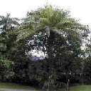
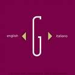

Forums galactiques > Assemblée Galactique : diplomatie officielle > Présentations
Pages : 1 2 ... 7 8 9 ... 31 32
| Elaeis Respect diplomatique : 17  01/08 ETU 11:46 | Score : 4 Détails ........Face à l'indifférence dans laquelle est mort un arbre paisible, qui a ouvert son système par soif d'apprendre à connaître cet univers, assassiné par un petit commandant du nom de Park; je prends la parole dans cette assemblée que je ne qualifie plus de "Noble" pour dire toute ma déception...
Mon esprit arbre/humain quitte cette galaxie sans se retourner et sans avoir appris grand chose des autres, si ce n'est que la cupidité semble faire partie de votre mode d'existence... | ||
| Angelus L Oméga Respect diplomatique : 1305  01/08 ETU 12:41 | Score : 1 Détails Vous auriez dû expliquer votre problème dans un nouveau sujet, afin d’attirer l’attention de la galaxie sur votre cas. Vos premiers messages n’étaient pas si inquiétants, les commandants pouvaient éviter le PC1 rien que pour éviter d’être ionisé et voulaient stocker leur flotte dans votre système, sans aucune intention hostile, c’est pourquoi je n’ai pas jugé obligatoire d’intervenir. Mais si les armes ont été sorties contre vous sans justification, là il y a un problème…
Je contacte Park, il va avoir à se justifier. | ||
| MAL CHATANT Respect diplomatique : -2 05/08 ETU 17:15 | Score : -2 Détails Bonjour je m'appelles MAL CHATANT et je suis commerçant .
Merci de votre accueil . | ||
| petitlou Respect diplomatique : 4 09/08 ETU 01:02 | Score : 4 Détails Bonjour tout le monde, cet galaxie m'est très inconnue, je viens d'arriver il y a plus d'une semaine.
Je suis de la fédération, et je regne pénard dans mon systeme pour l'instant, je dis bien pour l'instant. Pas besoin de me rendre une petite visite car plus de planetes à prendre, le 551 ouvert dans les prochaines heures... | ||
| Sid Vicious Respect diplomatique : 182  09/08 ETU 10:03 | Score : 1 Détails Et alors, Le commandant Sid s'avança pour prendre la parole:
"Amis commandant(e)s, je me présente, je suis le commandant Sid Vicious, de la Fédération. Je règne sur la platnète "Black&Red Star" et "Kropotkine" dans le système 639. Je souhaite longue et prospère vie à tous les commandant(e)s présents, et j'espère que nos relations seront sinon pacifiques, du moins cordiales. Je lève mon verre à la Galaxie et à vous!" Le commandant Sid bu d'une traite. | ||
| TC the Unbeliever Respect diplomatique : 130  09/08 ETU 17:27  | Score : 7 Détails Puissants Commandants ;
Mon éveil présumé a eu lieu dans l’Ancienne Terre. Sous ma première réincarnation, lors d’un premier Empire Galactique né en des temps si reculés que Dieu lui-même n’en conserve que difficilement la trace, j’étais connu comme « Le Néo-Terrien aux Yeux Rouges ». Mon nom complet, que vous n’entendrez plus, est « Thomas Covenant the Unbeliever » ; Pour ceux qui la connaissent, ma réincarnation actuelle se passe de commentaires : elle est désarroi, paradoxe et malédiction ; Je suis de toutes les époques, et n'appartiens à aucune ; Mon unique planète n'est que le berceau de ma solitude, mon pouvoir naissant le reflet de la vanité humaine. Pourtant, je Suis … Je ne serai pas plus commerçant que ne le réclame cette époque, pas plus diplomate que ne le demande mon Honneur, pas plus conquérant que ne l’exige mon Destin. A tous, je ne demande que la Paix, qui a tant été refusée à mon âme et j’apporterai l’assistance que permettront les circonstances. Mais que les choses soient dites : je suis né Guerrier. On m’ignore souvent, on m’écoute parfois, on me respecte toujours. Que la Galaxie vous soit propice. | ||
| Ika Respect diplomatique : 12  10/08 ETU 11:39 | Score : 6 Détails Une jeune commandante, jusqu'alors installée au fond de la salle, se dirigea d'un pas vif vers le centre de l'assemblée, pour prendre la parole
-Commandant, commandante, je me présente, je me nomme Ika .Mon empire, se compose pour l'instant d'un regroupement de quelques planètes .Mais je compte bien l'agrandir dans un futur proche, si il le faut au détriment d' autres commandants. Un petit sourire s'esquissât au coin de ces lèvres et une lueur méchante s'allumât dans ces yeux. -Comme on dit, on ne fait pas d'aveugles sans cassé des yeux. Son visage reprit l'aspect calme et angélique qu'elle affichait en arrivant. -J'espére que l'on pourra s'entendre et que je pourrais lier quelques amitiés. A bientôt dans ce monde meilleur que l'on nomme apocalypsis. La jeune fille fit mine de regagné sa place, puis se révisa -Ha, au faite, je suis en recherche d'une coalition pouvant m'accueillir, à bientôt. | ||
| jessica willer Respect diplomatique : 6 10/08 ETU 12:31 | Score : 2 Détails bonjour je me prenome jessica willer je suis comerçante et je recherche des personnes qui voudraient entrer dans une coalition veulliez me contacter par MP si vous êtes intéréssés .
| ||
| Caïman Holding Respect diplomatique : 221  10/08 ETU 12:48 | Score : 0 Détails La Direction des relations internationales de la Caïman Holding recherche également une coalition.
| ||
| meline Respect diplomatique : -28  10/08 ETU 12:49 | Score : 2 Détails une jeune femme se dirigeait a l assemblé pour se présenter a son tour
je m appelle meline fille de baalberith (oh non pas lui) je n ai pas les memes idées que mon père avait. je suis commerçante . d'ailleurs ! les dons de leems sont les bien venus pour mon développement! | ||
| jessica willer Respect diplomatique : 6 10/08 ETU 12:51 | Score : 4 Détails je n' offre que 10.000 lemms par semaines que j' augmenterais
par la suite selon mes moyens | ||
| Selena Vidergrand Respect diplomatique : 4 10/08 ETU 19:36 | Score : 4 Détails je ne me présente pas car je pérfère rester anonyme mais je serait intéressées par votre coalition
| ||
| M.G Respect diplomatique : -70  11/08 ETU 10:09 | Score : -4 Détails Si vous cherchez une coalitions aller dans la TAVERNNE la bas il y a tous se qui faut regarder les cooalitions :
il y a Str8 Outta Newdeun il faut demander a al-kacha et il y en a pluns d'autres. | ||
| freestyler Respect diplomatique : 8  11/08 ETU 15:26 | Score : 8 Détails Bonjour à tous, je ne suis pas nouveau mais je ne mettais jamais présenté, alors en ce jours je viens vous compter la cause de mon arrivée dans cet galaxie.
La joie et la prospérité planait sur Gandahara, chaque jours était vécu pleinement dans ce monde d’ailleurs. Mon père, seigneur incontesté de la planète, était un souverain que nul n'osait défier et avait créé un monde sans guerre et sans haine. Alors que la paix était à son apogée, une nouvelle source d'énergie fut trouvée, le Xénium, plus puissant que le deutérium mais beaucoup plus dangereux en raison de son caractère très radioactif et très instable. Celui-ci aurait pu nous aider à faire de nouveaux vaisseaux plus rapides, peut-être attendre la vitesse de la lumière, et permettre d'explorer ces autres univers encore inconnus. Mais certains virent en celle-ci un moyen de contrôler le monde, en cherchant à se l’aquaparer, à cause d'une soif de pouvoir, que certains possédaient, qui ne cherchait qu'à renverser le pouvoir, une guerre éclatât. Mais personne ne connaissez l'étendue de cette puissance qu'il possédait, nous le vîmes à notre grand regret. Des bombes fut construite, les bombes X et la plus terrible arme jamais construite la bombe HX qui était un mélange d'hydrogène et de Xénium. Un matin, je fut réveillé par un tremblement de terre suivit d'une énorme explosion, à cette instant mon père surgit dans ma chambre m'emmena dans les caves du palais, il était tout affolé et avait un expression de terreur sur le visage. Le palais commença à s'écrouler, les servantes me prirent et m'emmenèrent par un passage secret vers une grotte où se trouvait un vaisseau de secours, une trentaine de personne était déjà dedans et là un des sage, en qui mon père avait entièrement confiance et qui était un amis de longue date, a dit à mon père qu’il prendrai soin de moi et me protègerai au péril de sa vie, je ne comprenais pas ces mots, et un sentiment de peur monta en moi quand je vit mon père repartir en direction du palais. Pendant que nous montions dedans un deuxième tremblement de terre survînt, je ne comprenais pas ce qui se passait mais, une fois sorti de cette grotte avec le vaisseau, je regarda en arrière et vit deux gigantesques cratères dans le sol entouré d'un énorme champ de ruine. Je leva la tête et vit un missile se dirigeant droit sur la résidence où était encore mon père, je n'ai pas eu le temps de réagir que nous fumes secoué par l'onde de choc, et là je m'aperçu avec peine qu'un autre énorme cratère avait remplacé notre habitat. Je resta paralysé pendant quelques minutes, incapable de dire quoi que ce soit, je n'entendais plus rien ou plutôt je ne voulais plus rien entendre. Cela faisait déjà plusieurs heures que nous volions, nous sommes passé au-dessus de plusieurs centaines de villes, toute dévasté par la guerre, comment ,en juste un jours, avons nous pu en arriver là ? -La folie des hommes et leur soif de pouvoir en est la cause, me dit le sage. Il était toujours calme et réfléchi, mais cette foie je voyait bien qu’il était inquiet et moi aussi je l’étais. Par le hublot, je contemplais ce spectacle macabre que nous offrait les grondements et les lumières dû au explosion des bombes sous cette pluie torrentielle. La planète a été ravagé à cause d’une technologie dont nous n’imaginions même pas la puissance, tout était perdu, la paix que mon père avait réussit à faire régner, la beauté de cette planète et des gens qui y vivaient et également la vie de mon père. Alors que les bombes continuaient de résonner dans ma tête mon regard fut troublé par cette orage, les nuages formaient un tourbillon, des éclairs se formaient entre les nuages qui devenait étrangement rosé, je n’avais jamais vu un telle orage auparavant. Un missile fut lancé non loin d’ici, il se dirigea en direction du tourbillon et il fut happé dans celui-ci. Une énorme explosion retenti, il se forma comme une grosse boule, c’était noir, au milieu du tourbillon qui grossissait, elle était entourée d’éclair et étrangement tous les nuages étaient aspirés dedans. Le sage me dit qu’il venait de se former un trou noir à cause de la décharge magnétique de la bombe. Le vaisseau commença à être aspiré, nous fîmes demi-tour, plein gaz, mais cela ne changeait rien, nous étions toujours attire par ce trou noir. Nous avons percuté quelque chose ou quelque chose nous avait percuté, je ne sais pas ce que c’était, mais le vaisseau tournait dans tous les sens, le pilote ne contrôlait plus rien et, d’un seul coup, tout était noir, plus un bruit, plus de secousse, plus rien, le vide complet. Le vaisseau ne fonctionnait plus le moteur était endommagé et irréparable avec le peu d’équipement que nous avions à notre disposition. Après plusieurs jours de dérive, que dis-je, nous n’avions même pas conscience du temps qui passait, aucun moyen de se repérer, complètement perdu. « Une planète! » s’écria le pilote, « il y a une planète droit devant », je pu voir comme un soulagement dans certain regard, mais qui ne dura pas car nous nous dirigions à pleine vitesse contre cette planète avec un vaisseau, un débris plutôt, hors de contrôle. Le pilote se comporta en héros et fit son possible pour que l’on ne s’écrase pas, et il réussit à nous poser sans trop de casse. Tout le monde était sauf, quelques blessés mais rien de grave car nous avions de quoi les soigner. Certain partir en éclaireur, il ne trouvèrent aucune autre vit, mais il trouvèrent de la nourriture, de l’eau et de quoi fabriquer des abris pour passer la nuit. Au petit matin nous nous sommes regroupé et avons réfléchi sur ce qu’il venait de se passer et ce que nous allions devenir, le sage se leva et fit le tour des lieux et revint en disant :"La terre est cultivable et ont a du bois pour construire nos maisons.", de toute façon nous n’avions rien pour réparer le vaisseau donc nous étions bloqué. On décida de s'installer ici. Comme mon père était très respecté par les gens qui était ici, je fus élue "commandant" de cette colonie, que l'on appela « Inferna » en mémoire à ce que nous avons vécu ces derniers jours. Après plusieurs année de labeur, nous avons enfin réussit, notre cité resplendissait et nous avons redécouvert les technologies perdues et même amélioré certaine. | ||
| Le gentil Respect diplomatique : -10  11/08 ETU 19:39 | Score : 2 Détails Bonjour, je suis un nouveau commandant dans Origine et je ne connais pas bien le jeu mais je dis que s'est pas mal.
Mon nom : Le gentil par que je déteste être méchant. Mon caractère : Je suis près a aider tous le monde. Mon profil : Dirigeant, alors je vais faire une coalition dans 2-3 jours. Merci de vautre accueil. | ||
| park Respect diplomatique : 7  11/08 ETU 19:41 | Score : 0 Détails Je te conseil d'en rejoindre une car après il faut recruter,...
| ||
| Le gentil Respect diplomatique : -10 11/08 ETU 19:44 | Score : 1 Détails Oui mais la qu'elle choisir ?
| ||
| Mablane Respect diplomatique : 1399  11/08 ETU 20:10 | Score : 0 Détails Ah ! Voilà l'Ultime Question ! Tout d'abord, il faut que nous sachions ce que sont vos principes et vos idéaux, car votre précédente description ne nous a pas donné suffisamment d'indices... Alors seulement, nous pourrons vous aider à choisir la coalition qui vous conviendra au mieux.
| ||
| M.G Respect diplomatique : -70 11/08 ETU 20:17 | Score : -1 Détails Pour lui se n'est pas de coa.
| ||
| Le gentil Respect diplomatique : -10 11/08 ETU 20:23 | Score : -1 Détails Ne soyer pas si sévère avec moi cher commandant M.G et pour la coalition je cherche comme sa : une coalition qui ne soit pas trop méchant avec moi et qui m'aide un peu.
|
Pages : 1 2 ... 7 8 9 ... 31 32
Forums galactiques > Assemblée Galactique : diplomatie officielle > Présentations